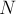
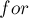

MAXimal
добавлено: 6 Sep 2011 1:03
редактировано: 23 Mar 2012 3:58
Содержание [скрыть]
Решето Эратосфена с линейным временем работы
Дано число  . Требуется найти все простые в отрезке
. Требуется найти все простые в отрезке ![[2; n]](../tex2png/cache/040235aca9e8238f832b1cbad383b0b9.png) .
.
Классический способ решения этой задачи — решето Эратосфена. Этот алгоритм очень прост, но работает за время  .
.
Хотя в настоящий момент известно достаточно много алгоритмов, работающих за сублинейное время (т.е. за ), описываемый ниже алгоритм интересен своей простотой — он практически не сложнее классического решета Эратосфена.
Кроме того, приводимый здесь алгоритм в качестве "побочного эффекта" фактически вычисляет факторизацию всех чисел в отрезке , что может быть полезно во многих практических применениях.
Недостатком приводимого алгоритма является то, что он использует больше памяти, чем классическое решето Эратосфена: требуется заводить массив из чисел, в то время как классическому решету Эратосфена достаточно лишь бит памяти (что получается в раза меньше).
Таким образом, описываемый алгоритм имеет смысл применять только до чисел порядка , не более.
Авторство алгоритма, по всей видимости, принадлежит Грайсу и Мисра (Gries, Misra, 1978 г. — см. список литературы в конце). (И, собственно говоря, называть данный алгоритм "решетом Эратосфена" некорректно: слишком отличаются эти два алгоритма.)
Описание алгоритма
Наша цель — посчитать для каждого числа  от в отрезке его минимальный простой делитель .
от в отрезке его минимальный простой делитель .
Кроме того, нам потребуется хранить список всех найденных простых чисел — назовём его массивом .
Изначально все величины заполним нулями, что означает, что мы пока предполагаем все числа простыми. В ходе работы алгоритма этот массив будет постепенно заполняться.
Будем теперь перебирать текущее число от  до . У нас может быть два случая:
до . У нас может быть два случая:
- — это означает, что число — простое, т.к. для него так и не обнаружилось других делителей.
Следовательно, надо присвоить и добавить
в конец списка . - — это означает, что текущее число — составное, и его минимальным простым делителем является .
В обоих случаях дальше начинается процесс расстановки значений в массиве : мы будем брать числа, кратные , и обновлять у них значение . Однако наша цель — научиться делать это таким образом, чтобы в итоге у каждого числа значение было бы установлено не более одного раза.
Утверждается, что для этого можно поступить таким образом. Рассмотрим числа вида:
где последовательность  — это все простые, не превосходящие (как раз для этого нам понадобилось хранить список всех простых чисел).
— это все простые, не превосходящие (как раз для этого нам понадобилось хранить список всех простых чисел).
У всех чисел такого вида проставим новое значение — очевидно, оно будет равно .
Почему такой алгоритм корректен, и почему он работает за линейное время — см. ниже, пока же приведём его реализацию.
Реализация
Решето выполняется до указанного в константе числа .
const int N = 10000000; int lp[N+1]; vector<int> pr; for (int i=2; i<=N; ++i) { if (lp[i] == 0) { lp[i] = i; pr.push_back (i); } for (int j=0; j<(int)pr.size() && pr[j]<=lp[i] && i*pr[j]<=N; ++j) lp[i * pr[j]] = pr[j]; }
Эту реализацию можно немного ускорить, избавившись от вектора (заменив его на обычный массив со счётчиком), а также избавившись от дублирующегося умножения во вложенном цикле  (для чего результат произведения надо просто запомнить в какой-либо переменной).
Доказательство корректности
Докажем корректность алгоритма, т.е. что он корректно расставляет все значения , причём каждое из них будет установлено ровно один раз. Отсюда будет следовать, что алгоритм работает за линейное время — поскольку все остальные действия алгоритма, очевидно, работают за  .
.
Для этого заметим, что у любого числа единственно представление такого вида:
где — (как и раньше) минимальный простой делитель числа , а число  не имеет делителей, меньших , т.е.:
не имеет делителей, меньших , т.е.:
Теперь сравним это с тем, что делает наш алгоритм — он фактически для каждого перебирает все простые, на которые его можно домножить, т.е. простые до включительно, чтобы получить числа в указанном выше представлении.
Следовательно, алгоритм действительно пройдёт по каждому составному числу ровно один раз, поставив у него правильное значение .
Это означает корректность алгоритма и то, что он работает за линейное время.
Время работы и требуемая память
Хотя асимптотика лучше асимптотики классического решета Эратосфена, разница между ними невелика. На практике это означает лишь двукратную разницу в скорости, а оптимизированные варианты решета Эратосфена и вовсе не проигрывают приведённому здесь алгоритму.
Учитывая затраты памяти, которые требует этот алгоритм — массив чисел длины и массив всех простых длины примерно — этот алгоритм кажется уступающим классическому решету по всем статьям.
Однако спасает его то, что массив , вычисляемый этим алгоритмом, позволяет искать факторизацию любого числа в отрезке за время порядка размера этой факторизации. Более того, ценой ещё одного дополнительного массива можно сделать, чтобы в этой факторизации не требовались операции деления.
Знание факторизации всех чисел — очень полезная информация для некоторых задач, и этот алгоритм является одним из немногих, которые позволяют искать её за линейное время.
Литература
- David Gries, Jayadev Misra. A Linear Sieve Algorithm for Finding Prime Numbers [1978]